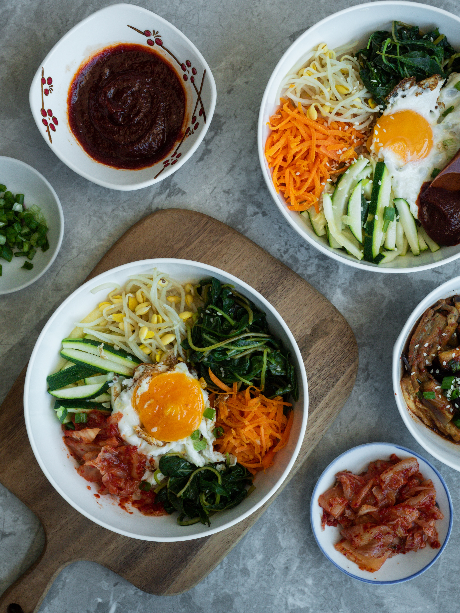

RECIPES
Green Curry
Image:

Reference: Bucknall Megan. "Green Curry", Published 14, 2020, Unsplash.com, https://unsplash.com/photos/green-soup-on-white-ceramic-bowl-qav5LFLbSUk
[A] ingredients:
- "Thai basil
- Bamboo shoots, canned
- Red bell pepper
- Green curry paste
- Makrut lime leaves
- Full fat coconut milk
- Fish sauce
- Palm sugar
- Boneless skinless chicken thighs
- Chicken stock, unsalted"
(Chongchitnant)
[B] How to:
(Chongchitnant)
Reference [A],[B]: Chongchitnant, Pailin. “Green Thai Curry Recipe.” Hot Thai Kitchen, 23 April 2022, https://hot-thai-kitchen.com/green-curry-new-2/. Accessed 23 October 2023.
Bim Bim Bab
Image:
Reference: Ng, Vicky (@vickyng). "Bim Bim Bab", Published May 24, 2020, Unsplash.com, https://unsplash.com/photos/cooked-food-on-white-ceramic-bowls-diDja86YL_M
[C] ingredients:
- "...Beef mince,
- ...Soy sauce,
- ...Sesame oil,
- ...Brown sugar,
- ...Minced garlic,
- ...Seasoned spinach,
- ...Seasoned bean sprouts,
- ...Shiitake mushroom,
- ...Carrots,
- ...Sea salt
- ...Steamed rice
- ...Eggs"
- etc.
(Sue from mykoreankitchen.com)
[D] How to:
(Sue from mykoreankitchen.com)
Reference [C],[D]: -, Sue. “Bibimbap (Korean Mixed Rice with Meat and Assorted Vegetables).” My Korean Kitchen, 3 January 2022, https://mykoreankitchen.com/bibimbap-korean-mixed-rice-with-meat-and-assorted-vegetables/. Accessed 23 October 2023.
Fried Rice
Image:

Reference: Alvarenga, Christopher. "Fried Rice", Published October 19, 2020, Unsplash.com, https://unsplash.com/photos/brown-and-green-dish-on-white-ceramic-plate-rQX9eVpSFz8
[E] ingredients:
- "White long grain rice...,
- Small white onion,
- Vegetables- Peas and Carrots...,
- Eggs,
- Sesame Oil,
- Soy Sauce,
- Green Onions..."
(Rivers)
[F] How to:
(Rivers)
Reference [E],[F]: Rivers, Alyssa. “Easy Fried Rice.” The Recipe Critic, 4 August 2019, https://therecipecritic.com/easy-fried-rice/. Accessed 23 October 2023.